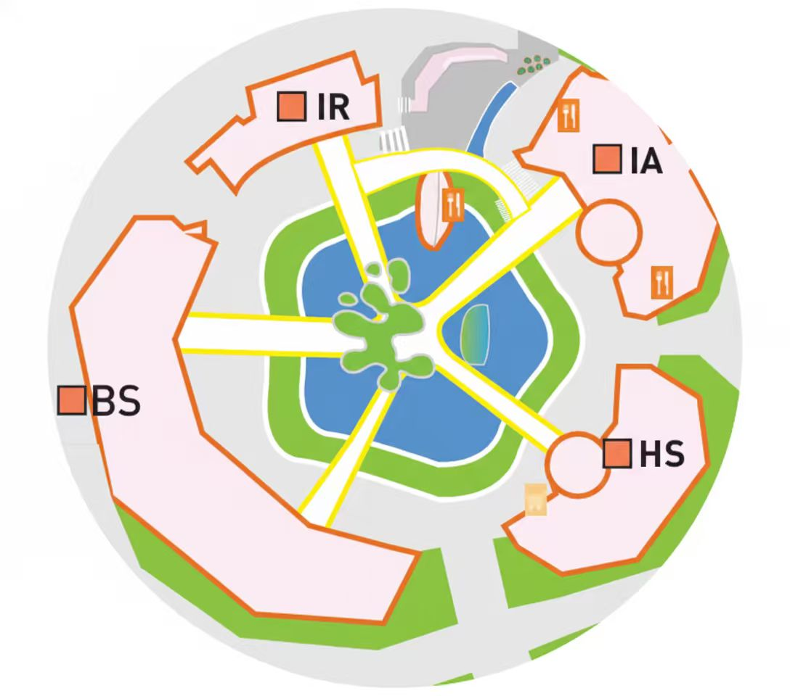
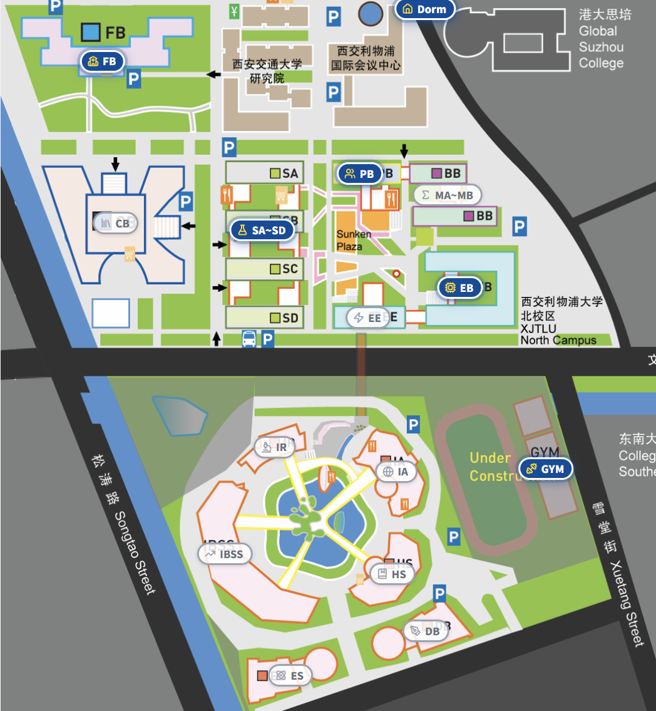
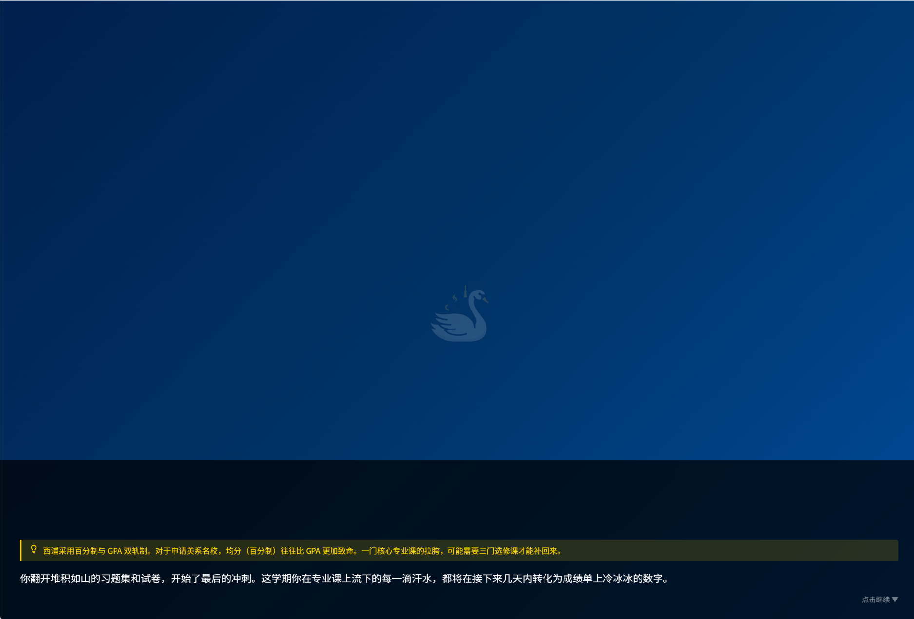
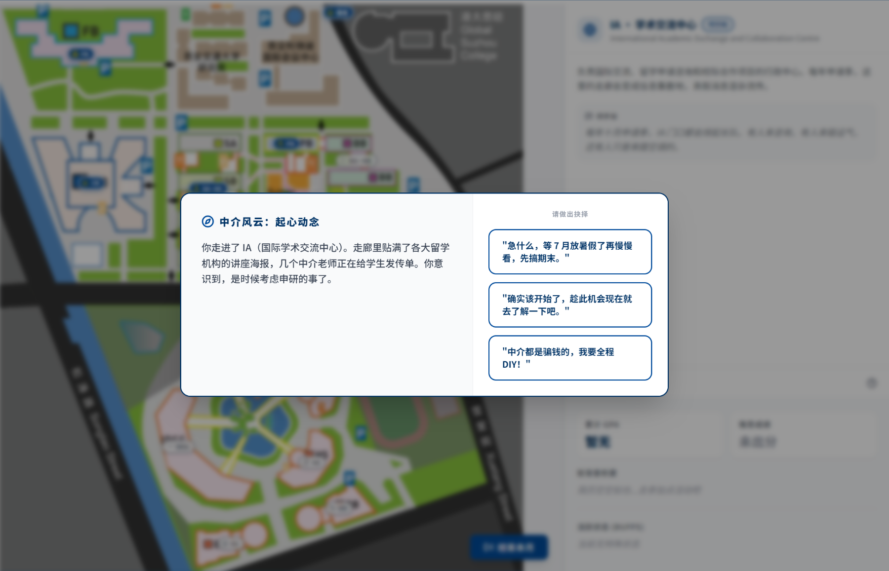

Results from testing our "Alpha" version with 3 real users. Each tester was asked to complete a series of tasks and provide feedback on their experience.
2nd year Computer Science major
"The game is fun and engaging. I like how my choices affect the outcome. The campus map is easy to navigate."
"Add more event variety and perhaps some mini-games to make it more interactive."
3rd year Information and Computing Science major
"As a junior student, I found the game very relevant to my current situation. It's helpful to understand the application process early."
"Include more realistic scenarios and perhaps add a timeline feature to help visualize the preparation process."
Parent of a prospective postgraduate student
"As a parent, I appreciate how this game helps students understand the importance of early planning. It's a great tool for the whole family to get involved."
"Add more specific information about different universities and program requirements to make it more informative."
"Before and After" screenshots showing changes made based on user feedback from usability testing.

Limited interaction points and unclear navigation

Added interactive hotspots, clearer navigation, and real-time stat feedback

Basic text-based events with limited choices

Added visual feedback, more choices, and clearer consequences
A brief discussion on the social/ethical implications of our design and the use of AI in this project.
We utilized generative AI in several aspects of this project:
All AI-generated content was reviewed and edited by our team to ensure accuracy, relevance, and alignment with our educational goals. We were careful to maintain human oversight throughout the development process to ensure the quality and appropriateness of all content.
Based on our evaluation and reflection, we plan to: